Managing Secrets with Vault
Since an application often needs access to sensitive data (e.g. SSH keys, login/password, …) to access other systems or APIs, we must ensure this information is stored securely. In this section, you’ll use a managed instance of HashiCorp Vault, available within Exoscale’s Marketplace.
[!WARNING] Access to the managed Vault is free for 7 days. Make sure to remove your subscription once you have completed this workshop.
Credentials used by the VotingApp 🔗
The VotingApp uses credentials to connect to its internal Postgres database. By default, these credentials are stored in plain text in the values.yaml file:
...
# Postgres configuration
postgres:
credentials:
username: postgres
password: postgres
...
Since anyone with access to the Helm Chart can get the default values, we’ll store this information in an instance of HashiCorp Vault.
Installing Vault 🔗
The Exoscale Marketplace provides various tools you can deploy in your organization in only a couple of clicks. HashiCorp Vault is one of these tools; it is in charge of managing sensitive data.
Click on Manage to start the installation of Vault.
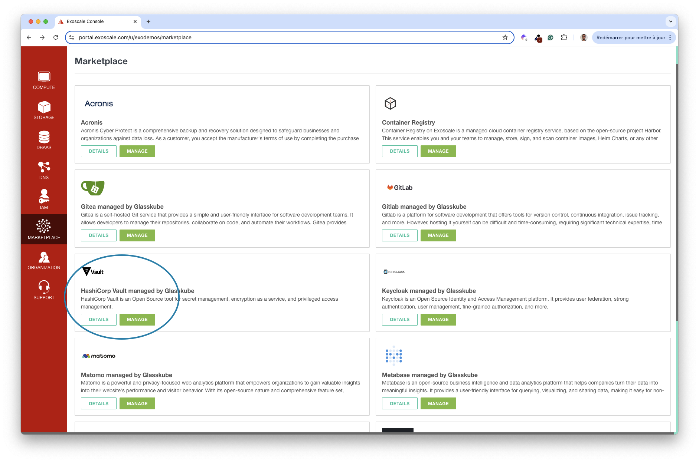
Next, enable the starter plan.
Then, confirm your choice.
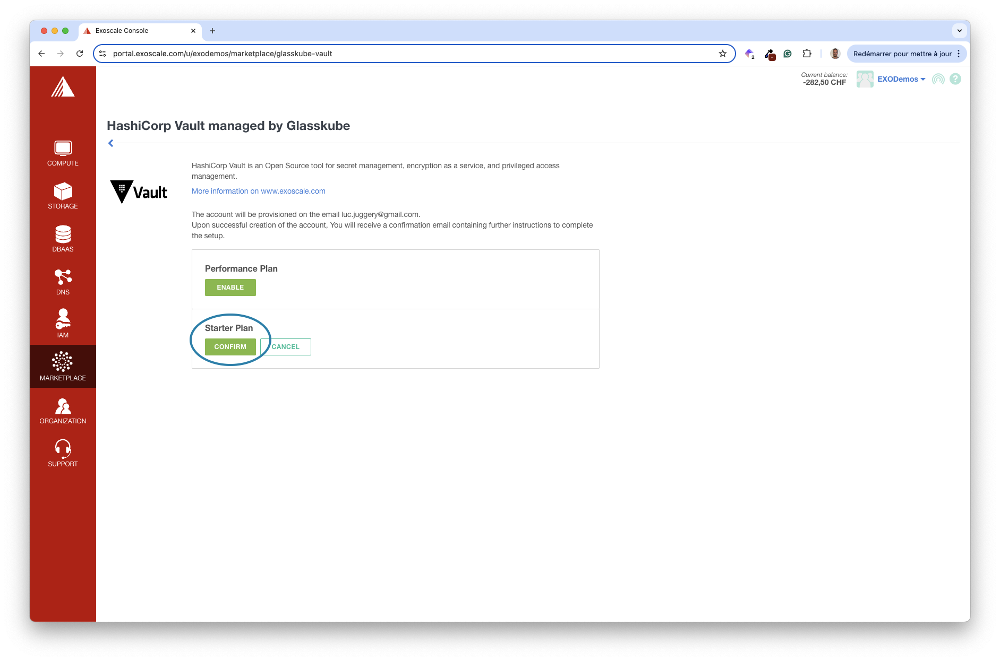
This activates the starter plan, which is a single Vault instance.
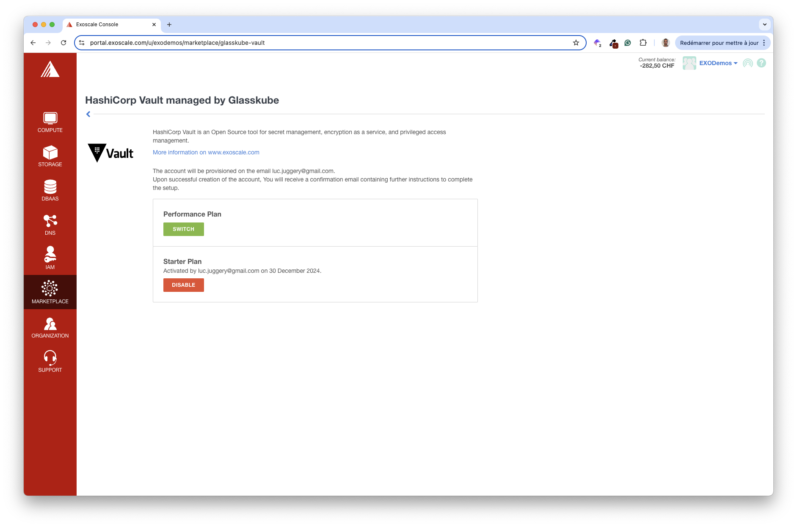
After a couple of minutes, you should receive an email like the following. It contains a link to your Glasskube console. Glasskube is the Exoscale partner that provides the managed Vault service.
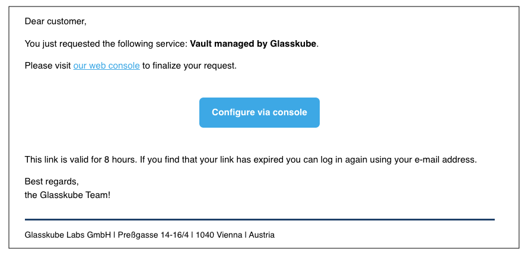
The console allows you to configure your Vault instance. Leave the default values, acknowledge the T&C, and click on Save.
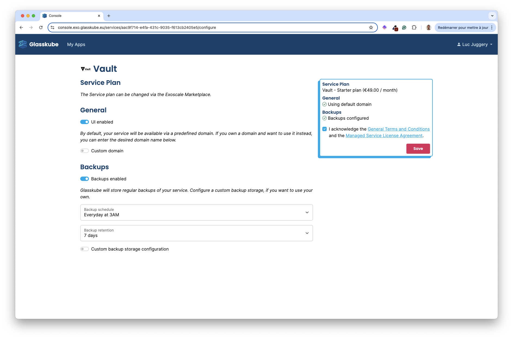
Your Vault environment is building.
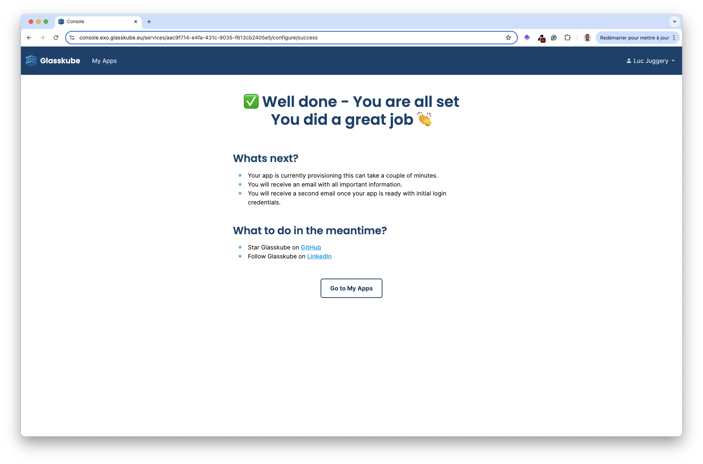
After a few minutes, you’ll receive another email with the address of your Vault.
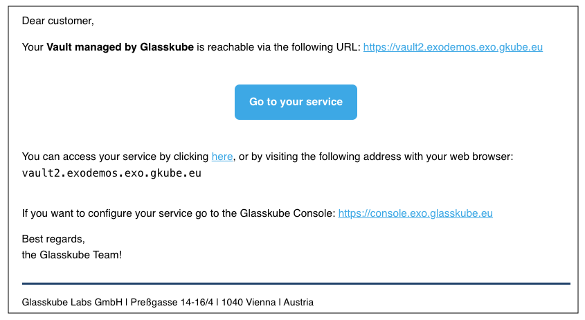
Using this URL, you’ll be able to select the number of keys to seal/unseal your Vault.
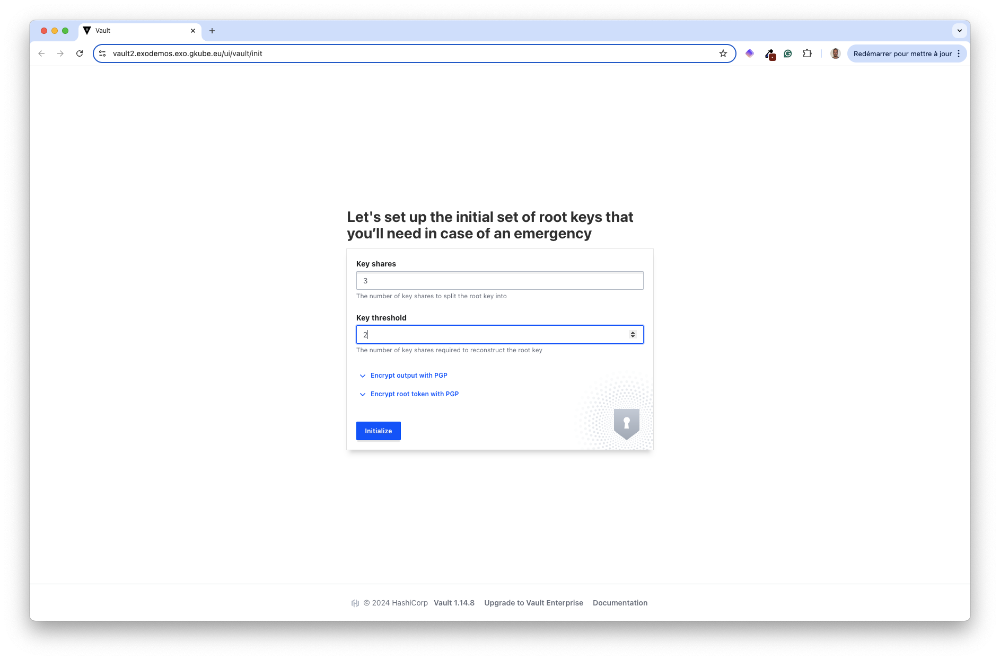
Download the keys and save them in a secure location on your local machine.
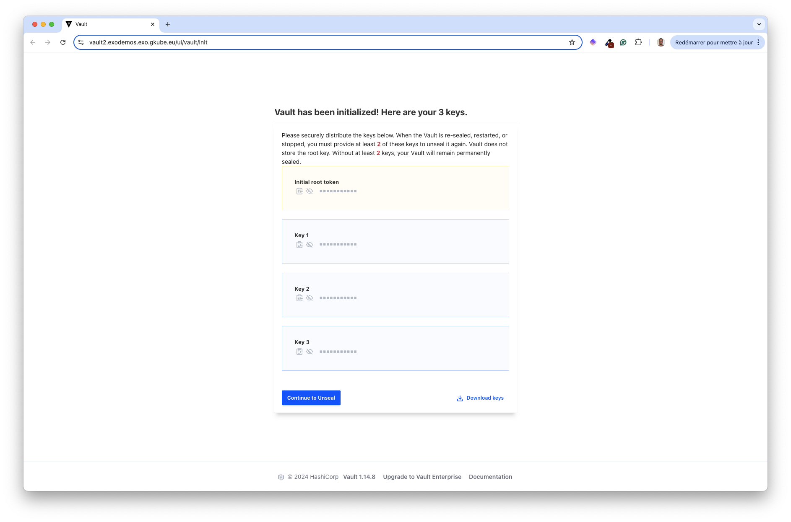
Use 2 of the keys to unseal the Vault.
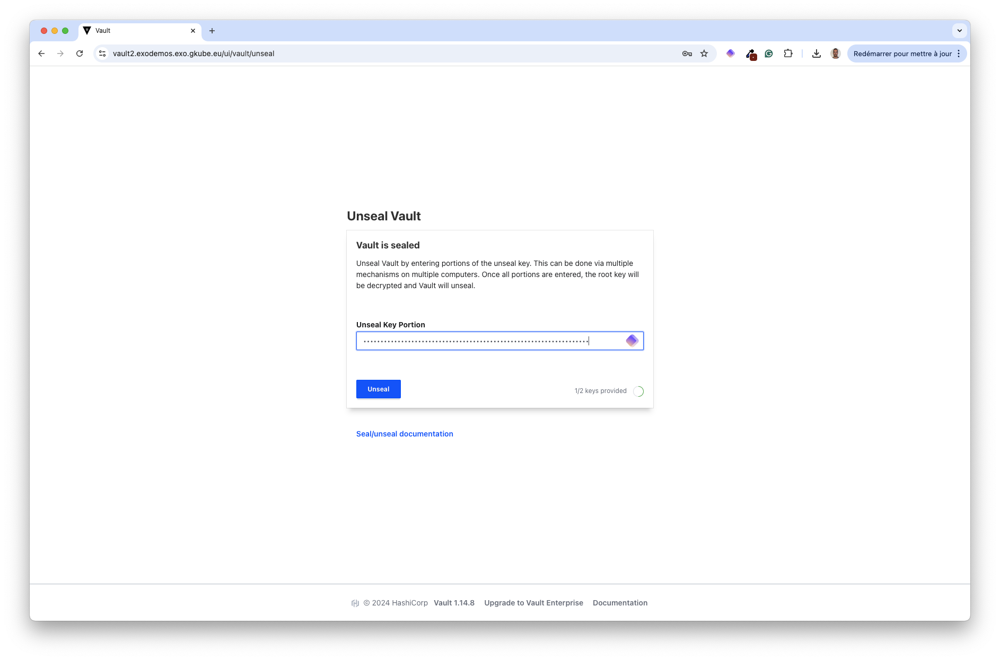
Once the Vault is unsealed, use the root token to log in.
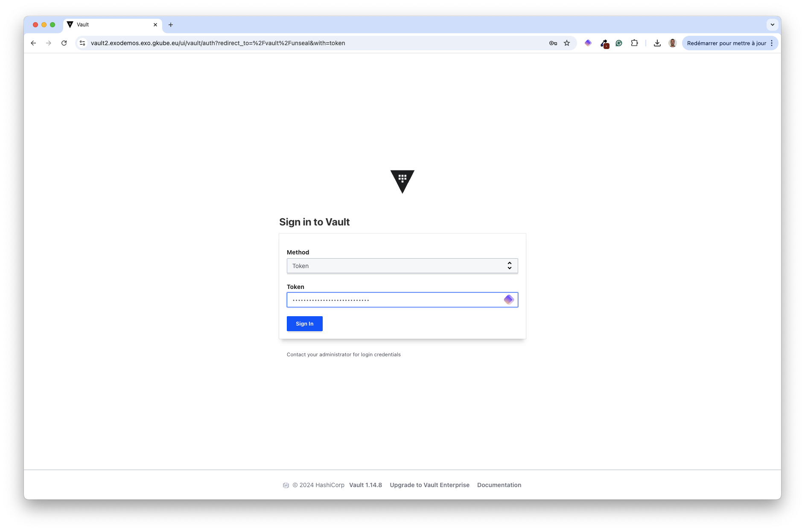
You can now configure the way you want to store your sensitive data.
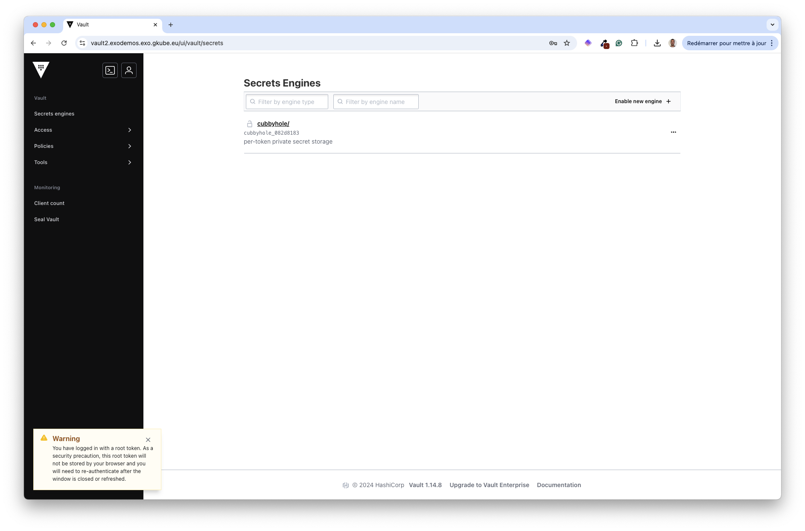
Creating new secrets 🔗
First, create a kv (key-value) store, which you’ll use to save the Postgres credentials.
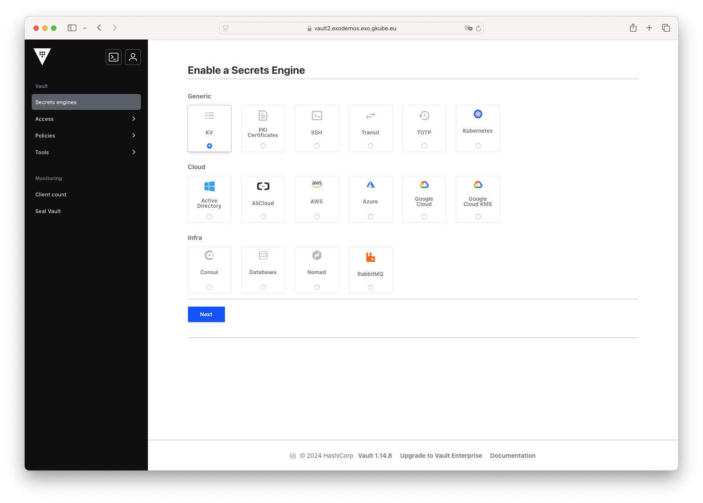
Specify votingapp in the Path and validate the creation.
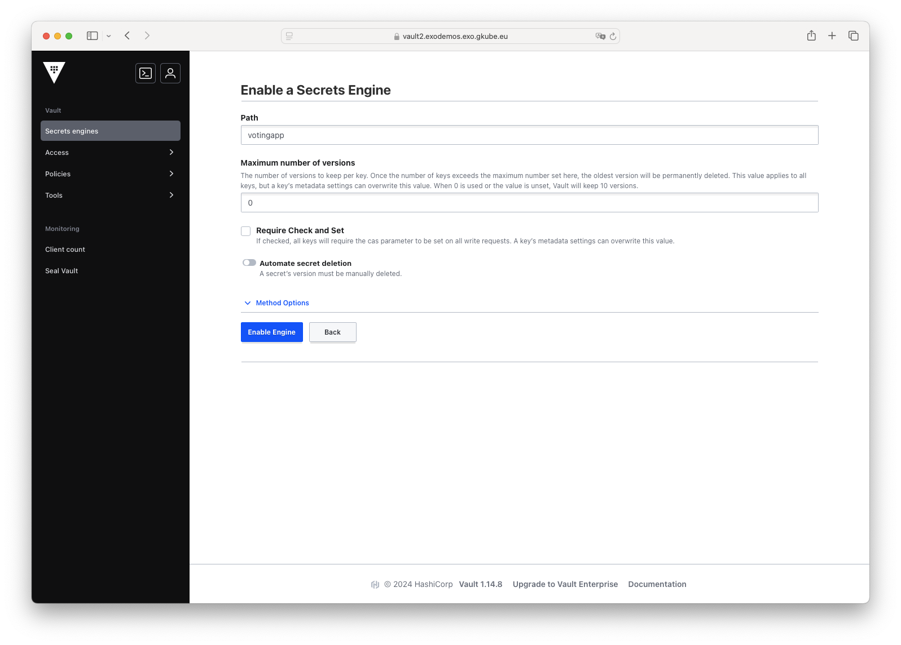
We’ll perform the next actions using vault cli instead of using the web interface.
First, install the Vault binary following these instructions
Next, using the URL of your Vault instance, log in with the vault binary:
export VAULT_ADDR="https://vault2.exodemos.exo.gkube.eu"
vault login
[!WARNING] For this workshop, log in using the root token. However, in a production environment, it is recommended to use the token of a dedicated user.
Next, create 2 secrets containing the Postgres username and the password respectively. In this example, we use the same value postgres123 for both.
vault kv put votingapp/pg/username username=postgres123
vault kv put votingapp/pg/password password=postgres123
Next, define a policy allowing read access to the data within the votingapp kv store:
path "votingapp/data/pg" {
capabilities = ["read"]
}
path "votingapp/data/pg/*" {
capabilities = ["read"]
}
Next, create the policy votingapp-readonly based on the content of this file:
vault policy write votingapp-readonly policy.hcl
Then, create a token attached to this policy and save it in the VAULT_TOKEN environment variable.
vault token create -policy=votingapp-readonly
Finally, login using this token:
vault login
Verify you can read the content of the secrets:
vault kv get votingapp/pg/username
vault kv get votingapp/pg/password
The Postgres credentials are stored in the Vault. In the next section, you’ll ensure these credentials are fetched from Vault when used by the VotingApp.
Installing external-secrets 🔗
External-secret is widely used in the Kubernetes ecosystem. This component allows Kubernetes Secrets to be created from content stored in an external system like Hashicorp Vault, KMS, etc.
First, install external-secret using Helm:
helm repo add external-secrets-operator https://charts.external-secrets.io/
helm install external-secrets external-secrets-operator/external-secrets --version 0.12.1 -n external-secret --create-namespace
Next, create a Kubernetes Secret containing the token to access Vault. External-secret needs access to Vault to fetch the sensitive data.
kubectl -n vote create secret generic vault-token --from-literal=token=$VAULT_TOKEN
Next, create a SecretStore, which defines the location of the secrets.
cat <<EOF | kubectl apply -f -
apiVersion: external-secrets.io/v1beta1
kind: SecretStore
metadata:
name: vault
namespace: vote
spec:
provider:
vault:
server: "${VAULT_ADDR}"
path: votingapp
version: "v2"
auth:
tokenSecretRef:
name: "vault-token"
key: "token"
EOF
In the next part, you’ll verify that the external-secrets component is working as expected.
Verifying the installation 🔗
Since External-secret is in charge of creating a Kubernetes Secret from a resource of type ExternalSecret, first define the specification of an ExternalSecret as follows. Using this CRD, external-secret will trigger the creation of a Kubernetes Secret containing a single piece of data (username), which value is fetched from Vault in votingapp/pg/username.
apiVersion: external-secrets.io/v1beta1
kind: ExternalSecret
metadata:
name: example
namespace: vote
spec:
refreshInterval: "15s"
secretStoreRef:
name: vault
kind: SecretStore
target:
name: example
data:
- secretKey: username
remoteRef:
key: votingapp/data/pg/username
Next, create the resource:
kubectl apply -f external-secret.yaml
In the background, you should notice a Secret was created in the vote namespace. This one has the property username in the data section:
kubectl describe secret example -n vote
Decode the value of this property, and make sure you get postgres123 as you set in Vault in the previous step.
kubectl get secret example -o jsonpath='{.data.username}' | base64 --decode
se64 -d
Getting the VotingApp Postgres credentials from Vault
In this step, you’ll ensure the credentials of the Postgres database are not specified in plain text anymore but are fetched securely from Vault instead.
First, update your local values.yaml file to enable the usage of the external secrets.
...
# Postgres configuration
postgres:
credentials:
externalSecrets:
enabled: true
username:
key: votingapp/data/pg/username
field: username
password:
key: votingapp/data/pg/password
field: password
Next, upgrade the application so it uses these new values:
helm upgrade --install vote oci://registry-1.docker.io/voting/app --version v1.0.36 --namespace vote --create-namespace -f values.yaml
You should observe that a new Secret db was created by external-secret:
$ kubectl describe secret db -n vote
Name: db
Namespace: vote
Labels: app.kubernetes.io/managed-by=Helm
reconcile.external-secrets.io/created-by=445c7bf8e3fe4d8835c510c6c181bb32
reconcile.external-secrets.io/managed=true
Annotations: meta.helm.sh/release-name: vote
meta.helm.sh/release-namespace: vote
reconcile.external-secrets.io/data-hash: a6bf97deb5a0cafd44194346e47151bf
Type: Opaque
Data
====
POSTGRES_PASSWORD: 11 bytes
POSTGRES_USER: 11 bytes
It contains the information stored in the Vault (postgres123 instead of the default postgres):
$ kubectl get secret db -n vote -o jsonpath='{.data.POSTGRES_USER}' | base64 --decode
postgres123
The credentials are not stored in plain text in the values.yaml file anymore. They are now securely stored in Vault.
[!INFO] Visit the Exoscale Marketplace to get the entire list of available templates and services you can use for your own applications.